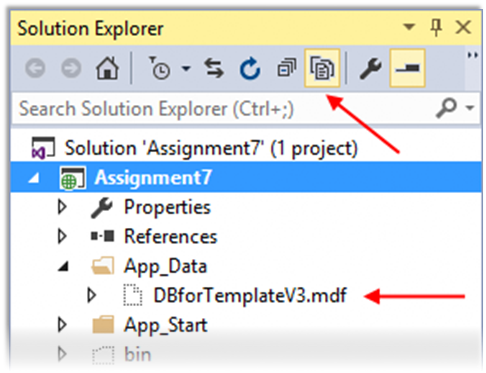
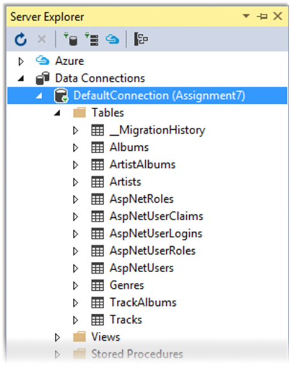
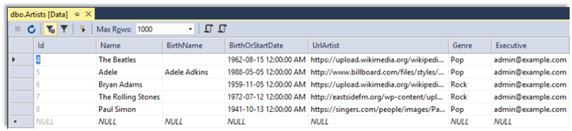

INT422 - Lecture 8 : Part 2
Work with your custom data model. Start working on Assignment 8.
Are you interested in looking at the database?
If you’re careful, you can open the database that’s used in a web app. How?
First, in Solution Explorer, select/highlight the project name (e.g. “Assignment7”).
On the toolbar, choose Show All Files.
Open (reveal) the contents of the App_Data folder. It will show “<something>.mdf”. This “mdf” file is used to hold the contents of the database.

Double-click it, and it will open on the left-side “Server Explorer” panel.
Look for the item named “DefaultConnection (project-name)”. Open (reveal) the contents of the Tables folder.

Notice several things:
You can right-click any of these tables, and choose “Show Table Data”, to show the data in a grid in the Visual Studio editor area.

Very important: When you’re finished looking, right-click “DefaultConnection (project-name)”, and choose “Close connection”. If you do not do this, then some of your future coding and testing tasks will fail.
Uh oh – data loading problems
If your data did not load correctly, then you should remove the data, fix the coding problem, and attempt to load the data again.
How to remove the data?
Create another method in the Manager class for this purpose. (Later, you will call this method from a controller action/method.)
Remove ALL the objects in each entity collection. Here’s an example of how you would do this for the track entity collection; you would repeat this code for the other entity collections:
foreach (var e in ds.Tracks)
{
ds.Entry(e).State = System.Data.Entity.EntityState.Deleted;
}
ds.SaveChanges();
Note: There are other ways to remove objects. This is the way that your teacher team recommends at this time.
Arg – the database is really messed up – I want to delete it and start again
Maybe your data items are messed up. Maybe the design model classes are wrong. Maybe there are just too many little problems, and they’re preventing progress.
You’re thinking “I want to delete the database and start fresh”. Here’s how:
The data context has a database Delete() method. Be careful. With great power, there is great responsibility.
Deletes the database on the database server if it exists, otherwise does nothing.
Calling this method from outside of an initializer will mark the database as having not been initialized. This means that if an attempt is made to use the database again after it has been deleted, then any initializer set will run again and, usually, will try to create the database again automatically.
We suggest that you add another method to the Manager class (which can then be called from a controller action/method). Its code:
public bool RemoveDatabase()
{
try
{
// Delete database
return ds.Database.Delete();
}
catch (Exception)
{
return false;
}
}
After the database delete task, run the data load task again.
How to delete local database instance
If the operations of removing data or deleting database do not work, or cannot attach a *.mdf file as database, you may try the following command in the Package Manage Console of your VS:
PM> sqllocaldb.exe
Microsoft (R) SQL Server Express LocalDB Command Line Tool
Version 12.0.2000.8
… …
instance "MSSQLLocalDB".
PM> sqllocaldb.exe stop MSSQLLocalDB
LocalDB instance "MSSQLLocalDB" stopped.
PM> sqllocaldb.exe delete MSSQLLocalDB
LocalDB instance "MSSQLLocalDB" deleted.
PM> update-database
Security and how it influences class design and code workflows
This section discusses some security issues, and how they influence class design and code workflows.
[Authorize] attribute in a controller
Recently, you learned how to protect controller actions/methods with the [Authorize] attribute. A request must be authenticated before it can execute an action/method.
If you add the attribute before the controller declaration, all methods are protected.
If you add the attribute before an action/method, only that method is protected.
There are various combinations (overrides, AND and OR, specifying roles or users, etc.) that can influence whether an action/method can be executed. You will learn and use these now and in the future.
Protecting methods in the Manager class
In the Manager class, we cannot (and should not attempt to) use the [Authorize] attribute.
Therefore, we must use “if” statements to implement method protection.
Study the Manager.cs source code file. Near the bottom, there is a RequestUser class, which has a number of members that are very useful. The Manager class has a User property, which becomes an instance of RequestUser the first time it is accessed. This “User” property can be used in the Manager, and also in any controller.
The manager object has access to HttpContext.Current, which has access to the security principal data you need for your “if” statement conditions. Here’s some scenarios:
The request must be authenticated
For example, use this:
if (HttpContext.Current.Request.IsAuthenticated)
// etc.
// or...
if (User.IsAuthenticated)
// etc.
The request’s security principal must have the “Manager” role claim
For example, use this:
if (User.HasRoleClaim("Manager"))
// etc.
You want to read/display the friendlier given name and surname, instead of the email address
In this scenario, assume that your web app gathers given name and surname data during the “register” for a new user account task. As you know (from studying the Account controller’s Register() method), these data items are saved as claims.
Therefore, you want to get and use the friendlier and nicer-looking given name and surname strings, instead of the ugly and unfriendly email address string. You can do this in a controller, or in a manager.
// Get the name claims in "Peter McIntyre" format...
var name1 = User.NamesFirstLast;
// Get the name claims in "Burton, Eden" format...
var name2 = User.NamesLastFirst;
Saving authenticated user information in your own entity objects
The techniques above enable you to read information about the authenticated user.
What about writing user information? For example, assume that you need to save the user name (i.e. the email address) of the current user, with the entity object that you’re creating/editing.
Well, here are a few tips or hints:
If possible, do the work in the manager method. Why? The manager is nearest the data store.
Do NOT enable the browser user to enter/provide this data (and you should not show it as editable in an HTML Form in the user interface).
Do not get/fetch the data in the controller, and pass it to the manager. Why? The manager already has access to user information.
This has a design implication for your view model classes:
If you want to display user information in the user interface, then you must add one or more properties (whatever fits your needs) to a display-only view model class (e.g. “…Base”, or “…WithDetails”).
Do NOT add user information properties to “…AddForm” or “…Add” view model classes.
Work on Assignment 8
Your professor will guide students as we continue working on Assignment 8.
Before you leave the room at the end of the time slot, ensure that you give the Work Report to your professor, for the in-class grading part of the assignment.